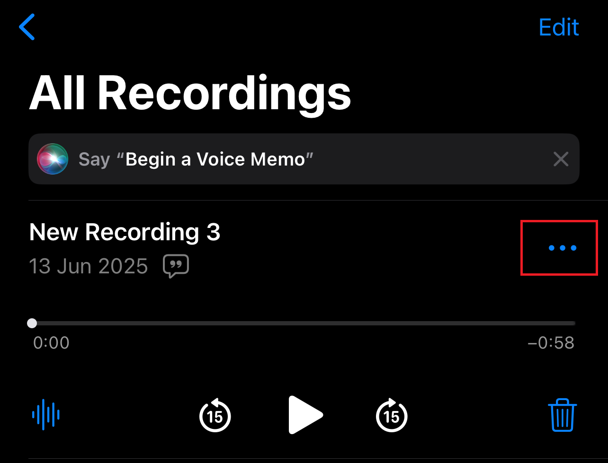
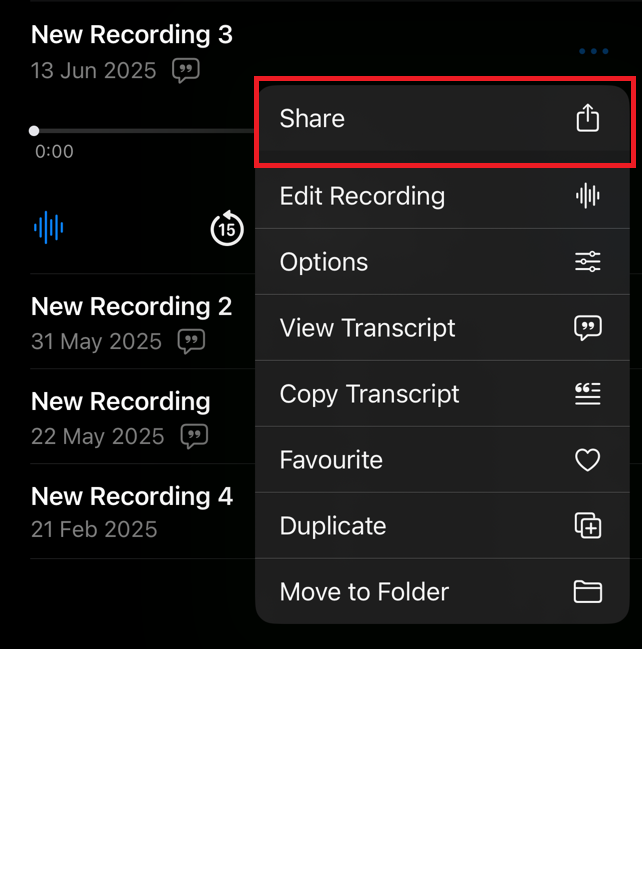
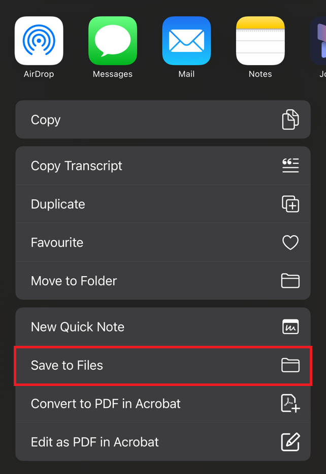

1. Open the Voice Memos app and record your answer.
2. Tap the “•••” button next to your recording.
3. Tap the Share button.
4. Choose Save to Files.
5. Pick a folder you like (e.g., iCloud Drive or On My iPhone), then tap Save.
6. Return to this app and upload the file from Files.